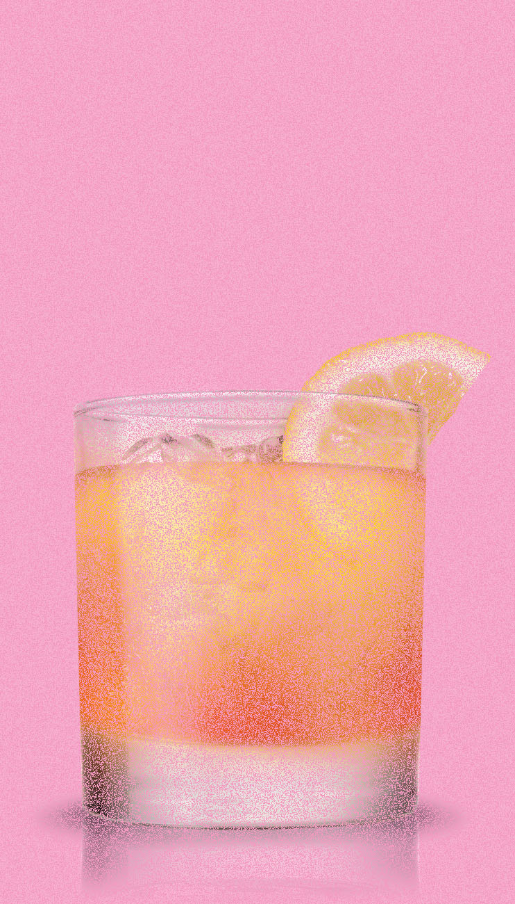

C.BAR
Editor's Note: This is a section for people who love classic cocktails. Choose these if you are a big fan of cocktail's culture.

Recipe of Hawaiian Vodka
3 parts vodka 1 tsp grenadine 1 part orange juice 1 part lemon juice 1 part pineapple juice ice cubes
Fill up the glass with ice Fill up the shaker with ice Pour pineapple juicelemon juiceorange juicegrenadinevodka into the shaker Shake well Strain into the old fashioned glass Garnish with lemon wedge